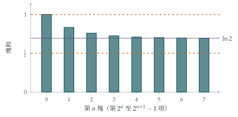

STEP III 2014，第 8 題
繼續之前，請先閱讀題目（原題為英文）。題目載於 STEP Support Programme 的題目資料庫： step.maths.org/questions/14-s3-q8
引子
調和級數（harmonic series）\(1 + \frac12 + \frac13 + \frac14 + \cdots\) 是最著名的例子：它的各項縮小至零，但總和卻無止境地增長。它增長得慢得離譜：要超過 \(10\)，需要多於 \(12{,}000\) 項；要超過 \(100\)，則需要大約 \(1.5 \times 10^{43}\) 項。但它終究會超過任何一個數。
現在把分母含有數字 \(2\) 的項全部丟掉：\(\frac12\)、\(\frac1{12}\)、\(\frac1{20}\) 至 \(\frac1{29}\)、\(\frac1{32}\) 等等統統刪去。你也許會以為，對一個本來就是無窮大的和來說，刪去十分之一左右的項不會有多大分別。事實卻是，餘下各項加起來小於 \(80\)。這個出人意表的結果由 A. J. Kempner 於 1914 年證明，而本題只用一個簡單而漂亮的想法，就把你一步步帶到這個結論：把和式切成一塊一塊。
動筆之前
第一個不等式談的是由 \(r = k^n\) 至 \(r = k^{n+1} - 1\) 的那一塊。取 \(k = 2\) 和 \(n = 3\)，這一塊包含哪些項？共有多少項？
它們是 \(f(8), f(9), \ldots, f(15)\)，共八項。一般而言，這一塊由 \(k^n\) 排到 \(k^{n+1} - 1\)，所以共有 \(k^{n+1} - k^n = k^n(k-1)\) 項。不等式所說的是：這一塊的和介乎（項數）\(\times\)（各項可能取的最小值）與（項數）\(\times\)（最大的一項）之間。
逐步解題
階段 1 估計一塊的上下界
由於 \(f\) 是遞減（decreasing）的，這一塊內的每一項都滿足 \[f(k^{n+1}) < f(k^{n+1} - 1) \leq f(r) \leq f(k^n) \qquad (k^n \leq r \leq k^{n+1} - 1).\] 把這 \(k^n(k-1)\) 項加起來，便得到該不等式。■
階段 2 調和級數
取 \(k = 2\) 和 \(f(r) = 1/r\)，由 \(2^n\) 至 \(2^{n+1} - 1\) 的那一塊，兩個界分別是甚麼？
下界（lower bound）是 \(2^n \cdot \frac{1}{2^{n+1}} = \frac12\)，上界（upper bound）是 \(2^n \cdot \frac{1}{2^n} = 1\)。所以每一塊，不論排得多後，其貢獻都介乎 \(\frac12\) 與 \(1\) 之間（圖 2.3.1）。\(n = 0, 1, \ldots, N\) 的各塊恰好拼合成由 \(r = 1\) 至 \(r = 2^{N+1} - 1\) 的和，所以把 \(N + 1\) 塊加起來，便得 \[\frac{N+1}{2} \leq \sum_{r=1}^{2^{N+1}-1} \frac1r \leq N + 1.\] 當 \(N \to \infty\) 時，左邊無止境地增長，所以部分和（partial sum）無界，級數發散（diverge）。■

階段 3 立方倒數之和
現在取 \(f(r) = 1/r^3\)，仍然用 \(k = 2\)。第 \(n\) 塊的上界是 \[2^n \cdot \frac{1}{(2^n)^3} = \frac{1}{4^n}.\] \(n = 0, 1, 2, \ldots\) 的各塊把每個正整數恰好覆蓋一次，所以 \[\sum_{r=1}^{\infty} \frac{1}{r^3} \leq \sum_{n=0}^{\infty} \frac{1}{4^n} = \frac{1}{1 - \frac14} = \frac43 = 1\tfrac13. \qed\] （嚴格來說，這只證明了每個部分和都不超過 \(\frac43\)；一個遞增而有上界的數列必定收斂（converge），所以這個無窮和存在，而且不超過 \(\frac43\)。它的真正數值是 \(1.2020\ldots\)）
階段 4 數一數不含 2 的數
如果容許在前面補零（例如把 \(7\) 寫成 \(007\)），由 \(0\) 至 \(999\) 的整數之中，有多少個可以只用數字 \(0, 1, 3, 4, 5, 6, 7, 8, 9\) 寫出來？
三個數位每個都有 \(9\) 種選擇，所以這樣的數字串共有 \(9^3\) 個。它們與由 \(0\) 至 \(999\) 之中不含 \(2\) 的數一一對應，再剔除 \(0\)（它不是正數），\(S(1000)\) 中便剩下 \(9^3 - 1 = 728\) 個數。■
階段 5 Kempner 級數
分塊的想法現在同樣適用，只是改為按位數來分塊，這等同於取 \(k = 10\)。
有多少個 \(d\) 位數不含 \(2\)？而一個 \(d\) 位數最小可以是多少？
首位數字可以是 \(1, 3, 4, \ldots, 9\) 中任何一個（八種選擇：不能是 \(0\)，也不能是 \(2\)），其餘 \(d - 1\) 個數位各有九種選擇。所以這樣的數共有 \(8 \times 9^{d-1}\) 個，而每一個都至少是 \(10^{d-1}\)。因此，\(S(n)\) 中的 \(d\) 位數對 \(\sigma(n)\) 的貢獻至多是 \[8 \times 9^{d-1} \times \frac{1}{10^{d-1}} = 8 \left( \frac{9}{10} \right)^{d-1}\] 。對所有位數 \(d = 1, 2, 3, \ldots\) 求和， \[\sigma(n) \leq \sum_{d=1}^{\infty} 8 \left( \frac{9}{10} \right)^{d-1} = \frac{8}{1 - \frac{9}{10}} = 80.\] 至於嚴格不等式，只須留意大部分的界都遠遠未達到相等（例如 \(\frac13 < 1\)，而我們卻用 \(1\) 作為每個一位數項的上界），所以對所有 \(n\) 都有 \(\sigma(n) < 80\)。■
回顧
把各項分組。兩個和逐項處理都不容易。把它們分成大小合適的塊之後，每個和都可以與一個等比級數（geometric series）比較。
怎樣分塊視乎問題而定。\(2\) 的冪適合 \(1/r\) 和 \(1/r^3\)；\(10\) 的冪則適合一道關於十進制數字的題目。
有界而遞增。兩個收斂證明都建基於與 第 2.2 節 相同的原理：正項的部分和是遞增的，所以只需要找到一個界便足夠。
背後的數學
題目中的第一個不等式正是柯西凝聚判別法（Cauchy’s condensation test）的核心：若 \(f\) 為正且遞減，則 \[\sum_{r=1}^{\infty} f(r) \text{ 收斂} \iff \sum_{n=0}^{\infty} 2^n f(2^n) \text{ 收斂。}\] 它把困難的級數變成容易的級數。應用於 \(f(r) = 1/r^p\)，便得到 \(\sum 2^n \cdot 2^{-np} = \sum (2^{1-p})^n\)，這是一個等比級數，恰好在 \(p > 1\) 時收斂。應用於 \(1/(r \ln r)\)，可知連這個級數也發散；應用於 \(1/(r (\ln r)^2)\)，則可知這個級數收斂。這個論證可追溯至奧雷姆（Nicole Oresme），他在大約 1350 年正是用圖 2.3.1 中的分塊方法，證明了調和級數發散。
調和級數發散得有多慢
圖 2.3.1 顯示每一塊的貢獻大約是 \(\ln 2\)，所以首 \(N\) 項之和應該大約是 \(\log_2 N \times \ln 2 = \ln N\)。事實上 \[1 + \frac12 + \cdots + \frac1N = \ln N + \gamma + \text{（某個趨向 $0$ 的量）},\] 其中 \(\gamma = 0.5772\ldots\) 是歐拉－馬斯刻若尼常數（Euler–Mascheroni constant）。至今沒有人知道 \(\gamma\) 是否有理數（rational）。你會在大學一年級的分析課中用積分證明這條公式，而調和數（harmonic numbers）會在 第 9.11 節 和 第 11.12 節 再次出現。
大多數的數都含有 2
Kempner 級數為甚麼收斂？因為在大數之中，「不含 2 的數」非常罕有：在小於 \(10^d\) 的數之中，不含 \(2\) 的所佔比例至多是 \((0.9)^d\)，而這個比例趨向 \(0\)。在 \(100\) 位數之中，只有不足 \(0.003\%\) 能避開數字 \(2\)。所以我們刪去的並不是十分之一的項，而是幾乎所有的項。我們求得的界 \(80\) 相當寬鬆：1979 年，Robert Baillie 用一種加速方法把這個和計算到小數點後許多位，其值約為 \(19.257\)。
冪的倒數之和
第 (ii) 部分的和是 \(\zeta(3)\)，即我們在 第 1.2 節 遇過的黎曼（Riemann）zeta 函數的一個值。在 第 2.4 節 我們會求出 \(\zeta(2) = \pi^2/6\) 的準確值，而歐拉（Euler）亦找到了 \(\zeta(4), \zeta(6), \ldots\) 的公式。但至今沒有人找到 \(\zeta(3)\) 的公式。1978 年，Roger Apéry 證明了 \(\zeta(3)\) 是無理數（irrational），震驚了整個數學界；他所用的積分與 第 2.9 節 中的頗為相似。至於 \(\zeta(5)\) 是否無理數，至今仍然未知。
思維技巧
要判斷一個正項級數是否收斂，可以把各項分成若干塊，使每塊內的項大致不變，然後把每一塊與一個簡單的級數比較。
比較判別法（comparison test）是大學一年級分析課的家常便飯。技巧在於選擇與甚麼比較：在這裏，就是選大小為 \(2^n\) 或 \(10^d\) 的塊，塊內各項的變化不超過一個固定的倍數。
延伸練習
感受一下有多慢。利用 \(\sum_{r \leq N} 1/r \approx \ln N + 0.5772\)，估計調和級數需要多少項才超過 \(10\)，以及需要多少項才超過 \(100\)。
判別法的實際運用。用第 (i) 部分的方法，取 \(f(r) = 1/r^2\)，證明 \(\sum 1/r^2 \leq 2\)。然後把第一項分開處理，從而改進這個界。
在收斂與發散之間。利用 \(k = 2\) 的分塊不等式，證明 \(\sum_{r \geq 2} \dfrac{1}{r \ln r}\) 發散，而 \(\sum_{r \geq 2} \dfrac{1}{r (\ln r)^2}\) 收斂。
排除更多數字。 較難 證明：十進制表示中既不含 \(2\) 亦不含 \(7\) 的所有正整數，其倒數（reciprocal）之和小於 \(35\)。（你看得出 \(35\) 是怎樣來的嗎？）
延伸閱讀
Julian Havil, Gamma: Exploring Euler’s Constant（Princeton University Press）。講述調和級數、\(\gamma\) 以及更多相關課題，為程度較高的中學生而寫。
Mary Hart, Guide to Analysis（Palgrave）。一本簡明的大學一年級教科書，其中論級數與比較判別法的一章寫得十分清晰。
Robert Baillie, “Sums of reciprocals of integers missing a given digit”, American Mathematical Monthly 86 (1979)。一篇短論文（論缺少某個指定數字的整數的倒數之和），讀完本節後你便有能力讀懂。